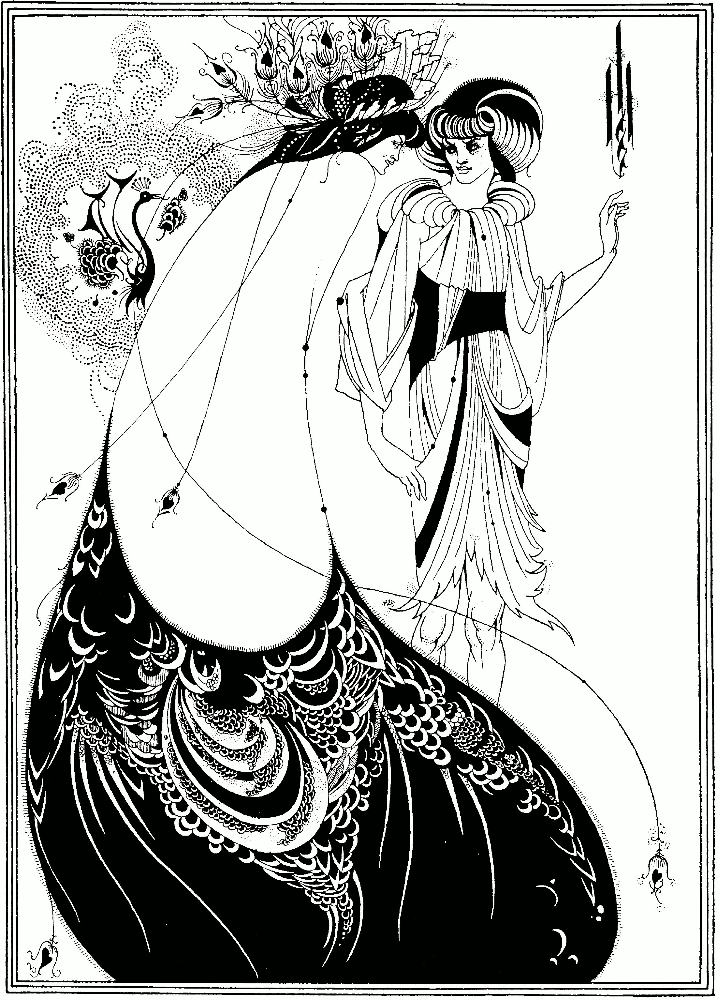

只有黑与白，也能华丽到令人眩晕。
裙摆横扫底部，占据视觉重心；俯身斜线压向右侧，直立褶裥与抬手形成抵抗。
无彩色不等于中性：纸白约 64%，墨黑约 36%。先用大黑定重量，再用点线分节奏。
没有统一光源；脸与手以纸白“受光”，裙摆压成剪影。明暗服务叙事，不服从自然。
实黑、发丝轮廓、点阵和留白像四个声部。头发、羽毛与裙摆的曲线突然加速又收紧，身体仿佛被装饰牵引。
事实：1893 年黑墨与石墨原作，属于 Salomé 系列。馆方将其与日本版画、孔雀意象及英国新艺术运动早期相联系；作者职业生涯不足七年，25 岁去世。
观点：两张脸几乎贴近，
视线却没有相遇。
华服既是诱惑，也是护甲。黑色吞掉身体细节，把一个人放大成无法绕开的视觉力量。
The Peacock Skirt，Aubrey Vincent Beardsley，1893，黑墨与石墨纸本；Harvard Art Museums/Fogg Museum，1943.649。原图来自 Wikimedia Commons，标注 Public Domain Mark 1.0。不同法域规则可能不同，使用前请复核来源。版权归原作者及适用权利人；事实据馆方，赏析：每日艺术。